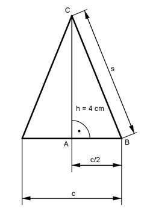

Pythagoras Aufgabe 50 Ein gleichschenkliges Dreieck hat einen Umfang U = 16 cm und eine Höhe h = 4 cm. Berechnen Sie die Länge der Seiten des Dreiecks in cm.

U = c + 2 * s |-2*s c = U - 2*s c = 16 - 2*s Satz von Pythagoras im Dreieck ABC: c s2 = h2 + (---)2 2 16 - 2*s s2 = h2 + (----------)2 2 s2 = 16 + (8 - s)2 s2 = 16 + 64 - 16s + s2 |-s2 0 = 80 - 16s |+16s 16s = 80 |:16 s = 5 cm c = 16 cm - 2 * 5 cm = 6 cm